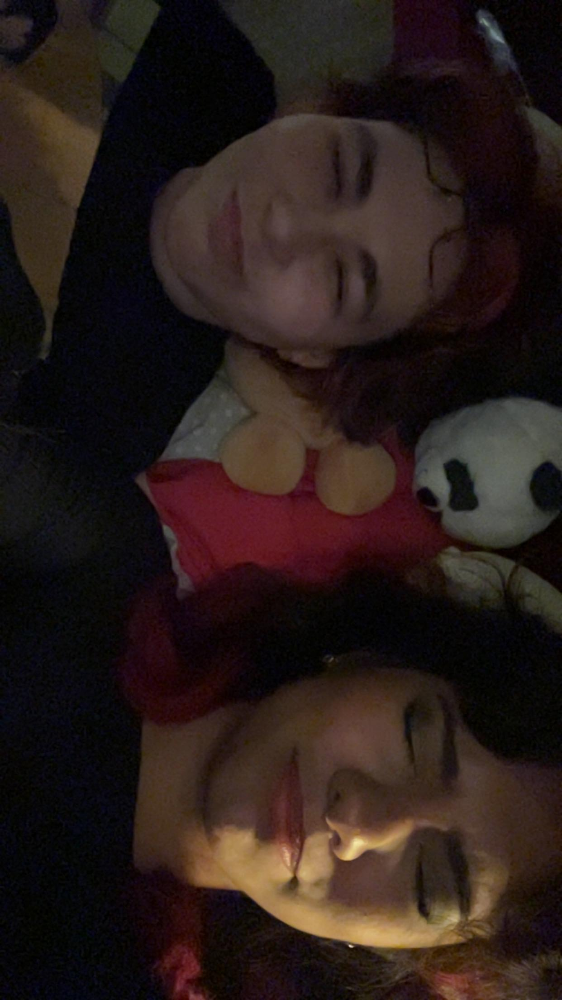
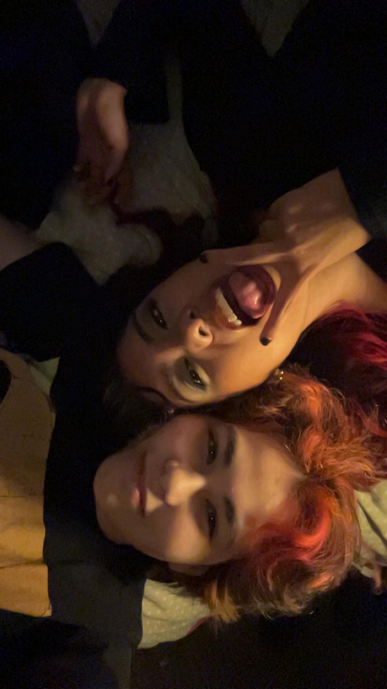
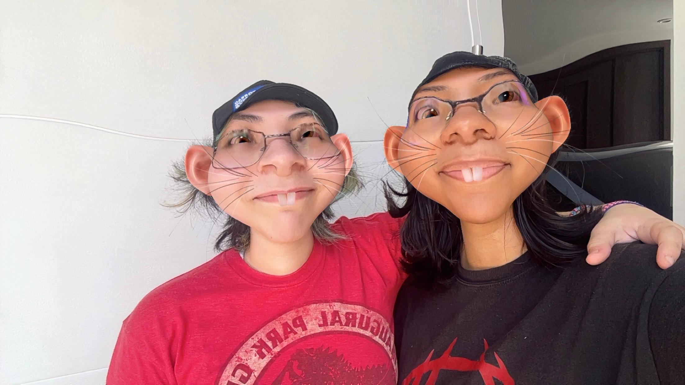

-
Bendecido el día en el que naciste. Espero que puedas sentir puramente, y con todo tu corazón, que este día merece de ser celebrado por todas las personas que hemos tenido el placer de entrar a tu vida; y por supuesto, que puedas reconocer la alegría de tomarte a ti mismo de la mano por ahora 20 años. Créeme que deseo siempre que te aceptes y te ames tanto como yo lo hago y mucho más.
Ahora bien, mis recuerdos del día en que te conocí son muy escasos, pero recuerdo perfectamente el verte sentado en la thrifty, las notificaciones en mi celular de amigas pidiendo perdón por ir tarde, y el nerviosismo de conocer a alguien nuevo sin un intermediario. Nuestra interacción fue nerviosa, y no tenía ni idea de lo importante que serías desde ese momento.
Intento no ser codiciosa y entristecerme demasiado por no verte todos los días, como solía ser. Fueron tres años (un poquito más, un poquito menos) de pasar mínimo 7 horas a tu lado cada día. Tu compañía era de esas cosas que tomas por adelantado, de esas que disfrutas sin que te pase por la cabeza que, algún día, podrían no estar. Nuestra amistad no es trágica, en absoluto. Somos afortunados de estar “a un clic de distancia”, sin embargo tengo que admitir que aún así desearía tenerte a 10 minutos de distancia y pasar tanto tiempo juntos que surjan momentos de aburrimiento compartido, y poder saborearlos sin la presión de saber que no volveré a estar contigo hasta las siguientes vacaciones. La verdad es que te extraño a mares y me arrepiento de no haber sido más consciente de los últimos días contigo antes de partir, pero intento aceptar que la juventud suele moverse arrasando con todo sin mirar atrás.
Sé que las cosas son difíciles de vuelta en Culiacán. Es una situación podrida y asquerosamente complicada. Sin embargo, espero que sientas que la noche se aleja ahora que te liberaste de ese trabajo y tienes tiempo para existir con más paz, como siempre debió ser para nosotros los humanos, y me mantengo emocionada por que me cuentes más de tus planes en la escuela de veterinaria. Es una disciplina noble, compasiva y de estómago fuerte, y sonrío al pensar en tu decisión porque tan solo tiene sentido con tu forma de ser.
Las vacaciones de semana santa están cada vez más cerca, y solo me dieron una semana, pero estoy preparando la sonrisa para verte de nuevo en donde sea que vayas a estar.
Ahora. Let’s address the elephant in the room. 20 añotes. Twenty, not twenteen.
Inzunza, los 20 años no son la sepultura de la juventud en absoluto. Es más, me atrevo a declarar que a los 20, la juventud se encuentra apenas en sus primeros pasos. La edad no es más que el tiempo pasando, y el tiempo pasando no significa más que el universo guardando tus secretos. El impulso es fuerte y se nos inculca, pero no tienes que correr. Vive a tu propio ritmo y creando tus propias reglas, pues la vida es una oportunidad única.
Te deseo todo el éxito (el éxito es construido por uno mismo) en tu vida, y espero poder estar presente en todos tus momentos determinantes, pues no me imagino quién sería hoy de no haberte conocido.
Con mucho, muchísimo amor,
tu sigmasigmaboii sigmaboiii sigma sigma boii

